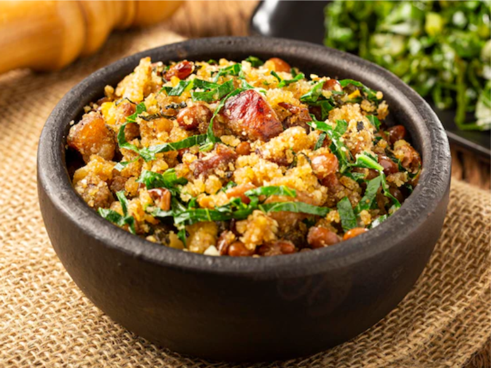

Frango com Quiabo
- 1 frango inteiro
- Quiabo a gosto
- Temperos diversos
Modo de preparo: Cozinhe o frango com quiabo e temperos, até que fique macio. Sirva quente.

Feijão Tropeiro
- Feijão cozido
- Bacon
- Farinha de mandioca
- Temperos a gosto
Modo de preparo: Misture o feijão cozido com bacon, farinha de mandioca e temperos. Refogue até ficar bem misturado.

Pão de Queijo
- Polvilho
- Queijo
- Leite
- Óleo
Modo de preparo: Misture o polvilho, queijo, leite e óleo até formar uma massa. Faça bolinhas e asse até dourar.